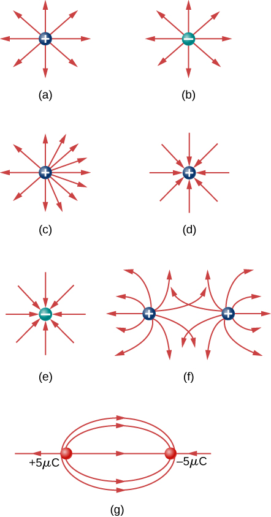
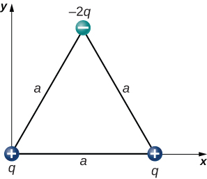
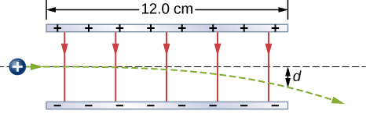
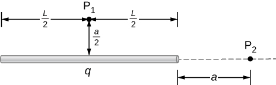
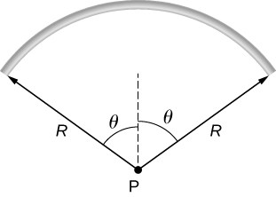
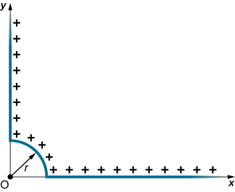

Homework 1 - Electric Field
Short Problems
Problem 1.1
Common static electricity involves charges ranging from nanocoulombs to microcoulombs.
- How many electrons are needed to form a charge of \(-2.00 \, \text{nC}\)?
- How many electrons must be removed from a neutral object to leave a net charge of \(0.500 \, \mu\text{C}\)?
Problem 1.2
To start a car engine, the car battery moves \(3.75 \times 10^{21}\) electrons through the starter motor. How many coulombs of charge were moved?
Problem 1.3
An amoeba has \(1.00 \times 10^{16}\) protons and a net charge of \(0.300 \, \text{pC}\).
- How many fewer electrons are there than protons?
- If you paired them up, what fraction of the protons would have no electrons?
Problem 1.4
An amoeba has \(1.00 \times 10^{16}\) protons and a net charge of \(0.300 \, \text{pC}\).
- How many fewer electrons are there than protons?
- If you paired them up, what fraction of the protons would have no electrons?
Problem 1.5
In a salt crystal, the distance between adjacent sodium and chloride ions is \(2.82 \times 10^{-10} \, \text{m}\). What is the force of attraction between the two singly charged ions?
Problem 1.6
The electric field in a particular thundercloud is \(2.0 \times 10^{5} \, \text{N/C}\). What is the acceleration of an electron in this field?
Problem 1.7
Which of the following electric field lines are incorrect for point charges? Explain why.

Problem 1.8
Draw the electric field for a system of three particles with charges \(+1~\mu C\), \(+2~\mu C\), and \(-3~\mu C\) fixed at the corners of an equilateral triangle with side \(2~cm\).
Long Problems
Problem 1.9
What is the net electric force on the charge located at the lower right-hand corner of the triangle shown here?

Problem 1.10
Four charged particles are positioned at the corners of a parallelogram as shown below. If \(q = 5.0 \, \mu\text{C}\) and \(Q = 8.0 \, \mu\text{C}\), what is the net force on \(q\)?

Problem 1.11
A proton enters the uniform electric field produced by two charged plates as shown below. The magnitude of the electric field is \(4.0 \times 10^{5} \, \text{N/C}\), and the speed of the proton when it enters is \(1.5 \times 10^{7} \, \text{m/s}\). What distance \(d\) has the proton been deflected downward when it leaves the plates?

Problem 1.12
Point charges \(q_1 = 2.0 \, \mu\text{C}\) and \(q_2 = 4.0 \, \mu\text{C}\) are located at: \(r_1 = (4.0 \, \hat{x} - 2.0 \, \hat{y} + 2.0 \, \hat{z}) \, \text{m}\) and \(r_2 = (8.0 \, \hat{x} + 5.0 \, \hat{y} - 9.0 \, \hat{z}) \, \text{m}\). What is the force of \(q_2\) on \(q_1\)?
Problem 1.13
A total charge \(q\) is distributed uniformly along a thin, straight rod of length \(L\) (see below).
- What is the electric field at \(P_1\)?
- What is the electric field at \(P_2\)?

Problem 1.14
A rod bent into the arc of a circle subtends an angle \(2\theta\) at the center \(P\) of the circle (see below). The rod is charged uniformly with a total charge \(Q\). What is the electric field at \(P\)

Problem 1.15
Positive charge is distributed with a uniform density \(\lambda\):
- Along the positive x-axis from \(r\) to \(\infty\),
- Along the positive y-axis from \(r\) to \(\infty\), and
- Along a 90° arc of a circle of radius \(r\) (as shown below).
What is the electric field at \(O\)? (Use results from two previous questions and superposition)
